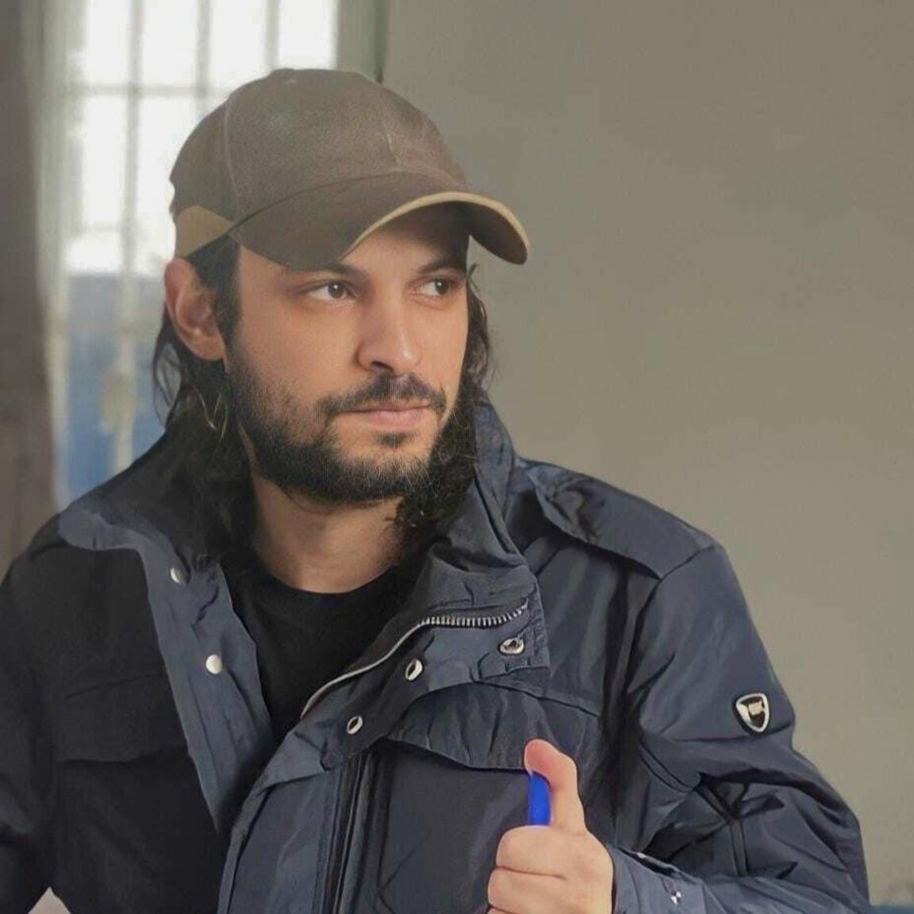
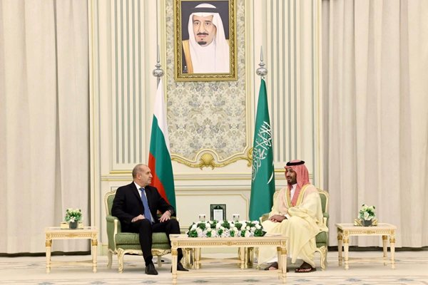

„Прогресивна“ България за пореден път показа своята регресивност, решавайки да изгради по-тесни връзки с една от най-потисническите държави – Саудитска Арабия. Държавата, която е един от най-големите производители на нефт и поради това верен партньор на ЕС и САЩ, е известна със своята „демократичност“ – една от малкото в света абсолютни монархии, там не съществуват нито политически партии, нито избори, а голяма част от икономиката ѝ се гради на робски труд (все пак ще отбележим, че преди няколко години жените там получиха правото да шофират). "Progressive" Bulgaria has once again demonstrated its regressive nature by deciding to forge closer ties with one of the most oppressive states—Saudi Arabia. This nation, a major oil producer and consequently a steadfast partner to the EU and the US, is renowned for its "democratic" credentials: it is one of the world’s few absolute monarchies, where neither political parties nor elections exist, and a significant portion of the economy is built upon slave labor (though it is worth noting that, a few years ago, women there were granted the right to drive).
Кой е Абдулрахман Aл-Халиди? Who is Abdulrahman Al-Khalidi?
Абдулрахман Aл-Халиди е политически дисидент. Участва активно в Саудитската асоциация за граждански и политически права, а по време на Арабската пролет се включва в антиправителствени протести. След потушаването на протестите и започналите арести на видни дейци, изказващи се в подкрепа на политическа и държавна реформа, Ал-Халиди напуска Саудитска Арабия и се установява в Турция. Оттам продължава дейността си, ставайки член на Движението на пчелите. През 2018 г. Джамал Хашогджи, друг член на движението, отива в консулството на Саудитска Арабия в Истанбул с цел получаване на документи – впоследствие изчезва „безследно“ (смята се, че е бил нарязан на парчета и изнесен в куфар от саудитските служби). Когато няколко години по-късно Ал-Халиди трябва да отиде до консулството, за да получи документи, той отказва. Решава да потърси убежище в ЕС. През 2021 г. пресича границата между България и Турция, надявайки се да получи политическо убежище. Българската държава го държи в бежански лагер в продължение на почти 5 години, отказвайки да му даде бежански статут. По време на престоя си там изпитва европейската „демократичност“ от първа ръка – опитва се да сподели храна с друго бежанско семейство – нещо, което му докарва гнева на българската полиция. Полицаите го отвеждат в тоалетната, където го подлагат на побой. По-късно българските служби излизат с твърдението, че той се е „опитвал да се самонарани в стена“. Abdulrahman al-Khalidi is a political dissident. He was an active participant in the Saudi Civil and Political Rights Association and took part in anti-government protests during the Arab Spring. Following the suppression of these protests and the subsequent arrests of prominent figures who advocated for political and state reform, Al-Khalidi left Saudi Arabia and settled in Turkey. From there, he continued his activism, becoming a member of the "Bee Movement." In 2018, Jamal Khashoggi—another member of the movement—visited the Saudi Arabian consulate in Istanbul to obtain documents; he subsequently disappeared without a trace (it is believed that he was dismembered and smuggled out in a suitcase by Saudi operatives). When, years later, Al-Khalidi was required to visit the consulate to obtain documents, he refused. He decided to seek asylum in the EU. In 2021, he crossed the border from Turkey into Bulgaria, hoping to be granted political asylum. The Bulgarian state held him in a refugee camp for nearly five years, refusing to grant him refugee status. During his time there, he experienced European "democracy" firsthand: when he attempted to share food with another refugee family, he incurred the wrath of the Bulgarian police. The officers took him into a restroom, where they subjected him to a beating. Later, the Bulgarian services claimed that he had “attempted to injure himself against a wall.”
Какво реши българската държава? What was the decision of the Bulgarian state?
През 2025 г. Софийският административен съд постанови освобождаването на Ал-Халиди. Впоследствие обаче Върховният административен съд отмени решението, опирайки се на становище на ДАНС, според което той „представлява опасност за националната сигурност“. В становището на Агенцията по национална сигурност – която е пълна с грешки относно гражданството на Ал-Халиди, възрастта му и други неща – се казва, че Саудитска Арабия „предприема мерки за демократизация“ и поради това няма основателна причина за тревога относно съдбата на дисидента. Така въпреки съдбата на множество саудитски активисти, въпреки показанията на множество други саудитски граждани, въпреки огромния брой заплахи, отправени от свързани със саудитското правителство личности към Ал-Халиди, българските служби решиха, че няма никакво основание да му се даде бежански статут и поради това трябва да бъде екстрадиран от България – а връщането му в Саудитска Арабия би било равнозначно на смърт. Службите нарушиха не само българските и международните закони за правата на човека, но и българската конституция, показвайки още веднъж за кого важат и за кого не важат законите. Нито една политическа партия не подкрепи Ал-Халиди, въпреки скорошните прояви „в защита на демокрацията и човешките права“ – оказва се, че противно на техните твърдения, Европа също не е благоприятна почва за тези ценности. In 2025, the Sofia Administrative Court ordered the release of Al-Khalidi. Subsequently, however, the Supreme Administrative Court overturned this decision, relying on an opinion from the State Agency for National Security (DANS) which claimed that he "poses a threat to national security." The Agency’s assessment—riddled with errors regarding Al-Khalidi’s citizenship, age, and other details—asserted that Saudi Arabia is "taking steps toward democratization," and that there is, therefore, no valid cause for concern regarding the dissident's fate. Thus, despite the fate of numerous Saudi activists, the testimonies of many other Saudi citizens, and the vast number of threats directed at Al-Khalidi by individuals linked to the Saudi government, the Bulgarian security services concluded there were no grounds to grant him refugee status. Consequently, they determined he should be extradited from Bulgaria—even though his return to Saudi Arabia would be tantamount to a death sentence. The services violated not only Bulgarian and international human rights laws but also the Bulgarian Constitution, demonstrating once again for whom the laws apply—and for whom they do not. Not a single political party came to Al-Khalidi’s defense, despite their recent displays of support for "democracy and human rights"—revealing that, contrary to their claims, Europe is not necessarily fertile ground for these values either.
Настояваме държавата да прекрати позорните си действия и да предостави убежище на Ал-Халиди, вместо да превръща човешката свобода в разменна монета за политически интереси! We demand that the state put an end to its disgraceful actions and grant asylum to Al-Khalidi, instead of turning human freedom into a bargaining chip for political interests!
На 28 ноември, събота, в 11 часа пред сградата на Президентството ще се проведе протест в подкрепа на Ал-Халиди. Призоваваме всички да се присъединят и заедно да изразим своята солидарност. Убежището е право, не привилегия! On Saturday, November 28, at 11:00 a.m., a protest in support of Al-Khalidi will take place in front of the Presidency building. We call on everyone to join us and express our solidarity together. Asylum is a right, not a privilege!